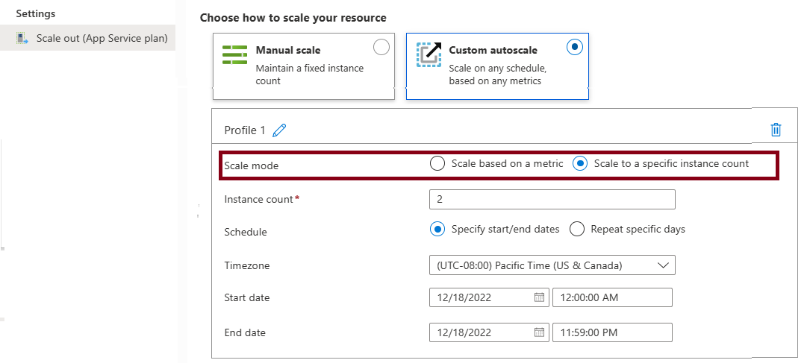

The autoscale process allows you to have the right amount of resources running to handle the load on your application. You can add resources to support increases in load and save money by removing idle resources.
Things to know about autoscale
Let's take a closer look at how to use autoscale for your Azure App Service plan and applications.
-
To use autoscale, you specify the minimum, and maximum number of instances to run by using a set of rules and conditions.
-
When your application runs under autoscale conditions, the number of virtual machine instances are automatically adjusted based on your rules. When rule conditions are met, one or more autoscale actions are triggered.
-
An autoscale setting is used by the autoscale engine to determine whether to scale out or in. Autoscale settings are grouped into profiles.
-
Autoscale rules include a trigger and a scale action (in or out). The trigger can be metric-based or time-based.

-
Metric-based rules measure application load and add or remove virtual machines based on the load, such as "do this action when CPU usage is above 50%." Example metrics include CPU time, Average response time, and Requests.
-
Time-based rules (or, schedule-based) allow you to scale when you see time patterns in your load and want to scale before a possible load increase or decrease occurs. An example is "trigger a webhook every 8:00 AM on Saturday in a given time zone."
-
-
The autoscale engine uses notification settings.
A notification setting defines what notifications should occur when an autoscale event occurs based on satisfying the criteria of an autoscale setting profile. Autoscale can notify one or more email addresses or make calls to one or more webhooks.
Things to consider when configuring autoscale
There are several considerations to keep in mind when you configure autoscale for your Azure App Service plan and applications.
-
Minimum instance count . Set a minimum instance count to make sure your application is always running even when there's no load.
-
Maximum instance count . Set a maximum instance count to limit your total possible hourly cost.
-
Adequate scale margin . Make sure your maximum and minimum instance count values are different, and set an adequate margin between the two values. You can automatically scale between the minimum and maximum by using rules you create.
-
Scale rule combinations . Always use a scale-out and scale-in rule combination that performs an increase and decrease. If you don't set a scale-out rule, your application might fail, or performance might degrade under increased loads. If you don't set a scale-in rule, you can experience unnecessary and extensive costs when the load decreases.
-
Metric statistics . Carefully choose the appropriate statistic for your diagnostic metrics, including Average, Minimum, Maximum, and Total.
-
Default instance count . Always select a safe default instance count. The default instance count is important because autoscale scales your service to the count you specify when metrics aren't available.
-
Notifications . Always configure autoscale notifications. It's important to maintain awareness of how your application is performing as the load changes.